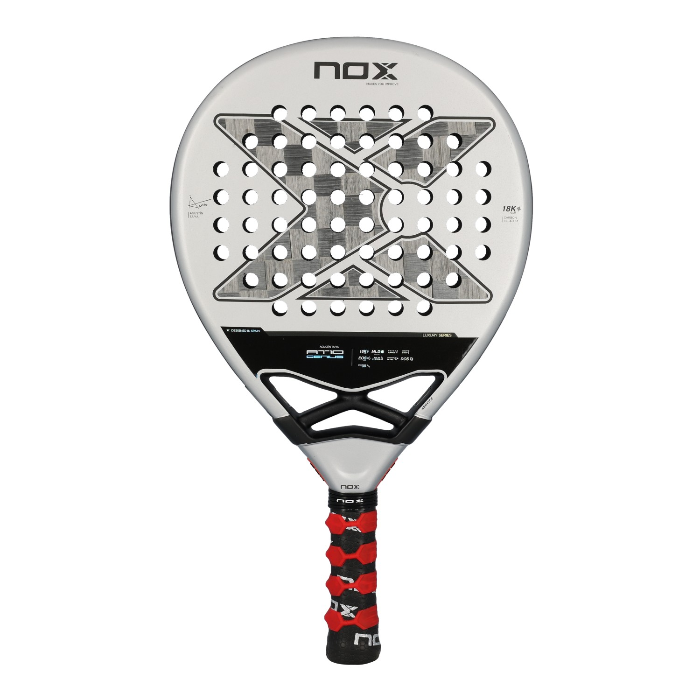

Padel
Mein Setup — NOX AT10 Genius 18K

Luxury Series
| Modell | NOX AT10 Genius 18K |
| Pro | Agustín Tapia |
| Serie | Luxury Series |
| Material | 18K Carbon Fibre Alloy |
| Form | Rund (Round) |
| Kern | MLD Foam (Multi Layer Density) |
| Technologie | DCS (Dynamic Control System) |
| Design | Designed in Spain |
Der Schläger von World No. 1 Agustín Tapia — maximale Kontrolle durch 18K Carbon und MLD-Kern. Präzision auf jedem Court.